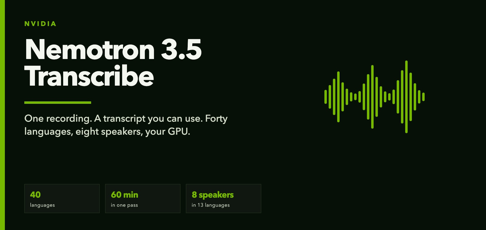
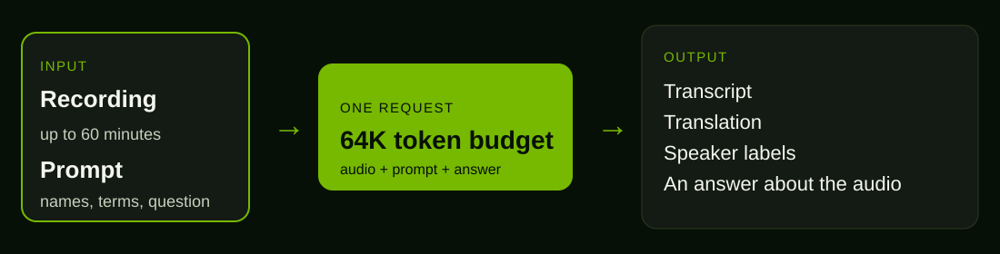
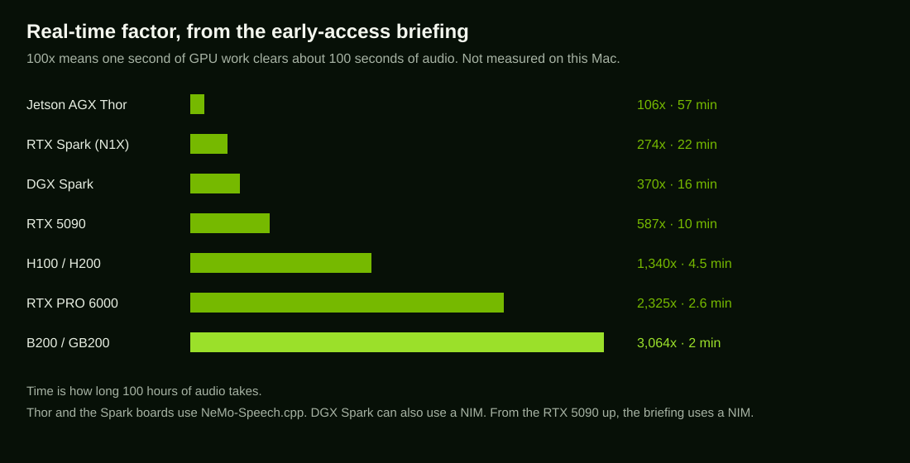

NVIDIA early access · recorded speech
One recording. A transcript you can use.
I am on the NGC team for Nemotron 3.5 Transcribe. The checkpoint email has not arrived, and this Mac has no NVIDIA GPU, so this page walks the model in order. Press play. The clip is local. The labels show the shape of a result.

The console
Same clip. A different instruction changes the tab. Phrase times on this page are marked by hand, so the playhead has something honest to follow. The model will emit its own.
Demo mode. Three Mac voices, mixed into one file. Not a Nemotron inference.
One request does the whole job
Audio, the prompt, and the answer share one 64,000-token budget. A long file plus a long prompt leaves less room for the answer.

Do not mix it up with ASR
Nemotron 3.5 ASR is the 600-million-parameter streaming model. It listens to live audio.
Nemotron 3.5 Transcribe is the recording model. About 30 billion parameters, about 4 billion active. You hand it a file you already have, up to 60 minutes, and you tell it what to do with the words.
What to ask for
- Write down what was said.
- Translate, to English or from English, in 31 languages.
- Label who spoke, up to 8 people, in 13 languages.
- Pass names and terms so the spelling follows your list.
- Ask a question about the recording.
Where it runs
Self-hosted, from the edge to the data centre. These figures are NVIDIA’s early-access briefing.

Forty languages
Every chip transcribes, and the model can switch language mid-sentence. A bright chip is marked for translation on the briefing. English is the pivot, so the other 31 translate to and from English. A green border labels speakers.
When the checkpoint email arrives
- The NGC mail will say how to download the weights. They do not live in this repo.
- Test a real language switch, in any of the 40 languages.
- Test a domain word twice: once with your term list, once without.
- Test speaker labels on a multi-speaker clip, in one of the 13 languages.
- Measure throughput and write the full test setup down.
Support: NemotronSpeechReviewerSupport@nvidia.com